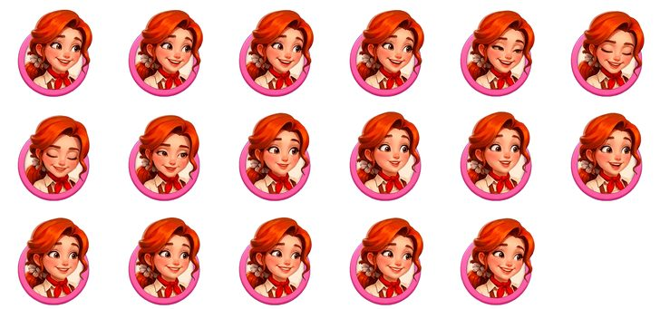
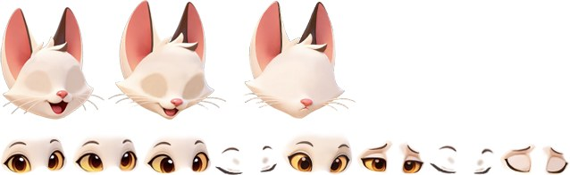
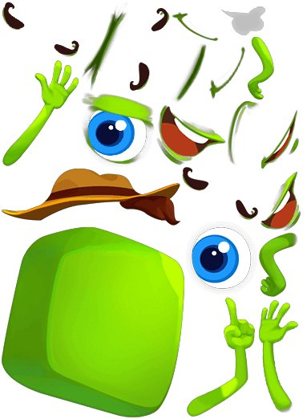

산출기 용량 색 — 프레임 시퀀스 · 노드 트랜스폼 · Spine
계수 조정 — 기본값은 실측치, 304×288 기준
| 방식 | 구조 | 감정당 | 캐릭터당 | 전체 | 배수 |
|---|
감정당은 감정 하나를 더 붙일 때 늘어나는 용량(한계비용)입니다. 프레임 시퀀스는 감정마다 이미지를 전량 새로 저장하지만, 나머지 둘은 베이스를 공유하고 눈·입 변형과 키프레임만 얹습니다. 그래서 감정이 늘수록 배수가 커집니다 — 배수는 고정값이 아닙니다. 프레임 수는 프레임 시퀀스에만 곱해집니다. 나머지 둘은 키프레임으로 저장하고 사이를 보간하므로 길이를 늘려도 용량이 거의 그대로입니다.
스케일 칠해진 행이 현재 입력값 — 위 입력 칸과 같은 색
감정 수 축 · 캐릭터당
| 감정 수 | 프레임 시퀀스 | 노드 트랜스폼 | Spine |
|---|
프레임 수 축 · 캐릭터당
| 프레임 수 | 30fps 길이 | 프레임 시퀀스 | 노드 트랜스폼 | Spine |
|---|
노드·Spine 열이 움직이지 않습니다. 오타가 아니라 이 방식들의 성질입니다. 연출을 더 길게, 더 부드럽게 갈수록 격차는 일방적으로 커집니다.
계수 근거 같은 조건으로 맞춘 세 방식 실측
| 방식 · 대상 | 크기 | 감정 | 키프레임 | 30fps 환산 | 총량 | 감정당 |
|---|---|---|---|---|---|---|
| 프레임 시퀀스 · 채팅 얼굴 | 304×288 | 4 | 17 | 17 | 1.85 MB | 462 KB |
| 노드 트랜스폼 · 솔리테어 루나 | ~150×180 | 4 | 56 | 226 | 158 KB | 40 KB |
| Spine · puzzle-omg green | 320×296 | 4 | 34 | 59 | 49.4 KB | 12 KB |



계수별 출처 펼치기
| 계수 | 값 | 출처 |
|---|---|---|
| 프레임 밀도 | 0.316 B/px |
story-merge-proto-client bundle/chat/animation/
PNG 272장 전수 · 장당 27.7 KB ÷ 87,552 px
|
| 노드 base | 71.5 KB |
solitaire-tripeaks-client ingame/extra/
head 22.1 + head_down 23.8 + head_down_02 25.6
|
| 노드 감정당 | 21.6 KB |
같은 경로 eyes_* 8종 51.3 KB ÷ 4 = 12.8,
reward_box_cat_*.anim 4종 35.1 KB ÷ 4 = 8.8
|
| Spine base · 감정당 | 27.1 · 6.9 KB |
puzzle-omg NoCompress/spine/ 5세트
(감정 1·1·4·4·5 / 29.7·38.5·49.4·58.8·62.3 KB) 선형회귀
|
노드 트랜스폼 애니메이션은 노드 트리로 파츠를 분리하고 cc.Animation 으로
position/scale/angle/opacity 키프레임만 찍는 방식입니다.
루나 클립 7종 전부 spriteFrame 키가 0개인 걸로 확인했습니다.
Spine 처럼 보이지만 외부 툴도 런타임도 쓰지 않습니다.
“본 애니메이션”은 틀린 이름입니다 — 본이 없고 노드 계층 트랜스폼뿐입니다.
.atlas 0개이고, 각 리포의 SpinePlayerOnEnable.ts 는
붙일 에셋이 없는 템플릿 보일러플레이트입니다. coin-match gold_pig(221 KB)은
감정 표현이 아닌 연출용이라 회귀에서 제외했습니다.
루나 파츠는 1.603 B/px 로 사내에서 압축이 가장 비효율적이어서 노드 계수는 보수적입니다.
모든 용량은 10진 소스 파일 기준이며, GPU 텍스처 메모리는 별도입니다 —
채팅 얼굴은 감정당 5.95 MB, 16감정 전체 95.3 MB.